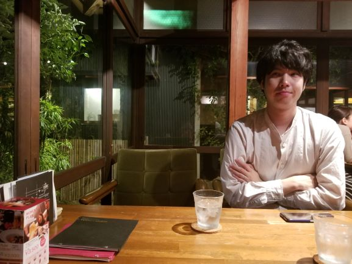

About us


右田
涼
1990年8月23日生まれ。出身は島根県松江市。会社員。
学生時代はバスケに熱を入れ、社会人以降はNBA観戦が趣味。
自分のルーツである島根でみなさまとお会いできることが嬉しいです。
美味しい料理・お酒をご用意してお待ちしております！
小林 千夏
1994年9月7日生まれ。出身は兵庫県姫路市。A型。会社員。
旅行にいったり、おいしいものを食べたりすることが趣味です。
47都道府県制覇したく、今は40都道府県です！
当日、皆様にお会いできることを楽しみにしています。